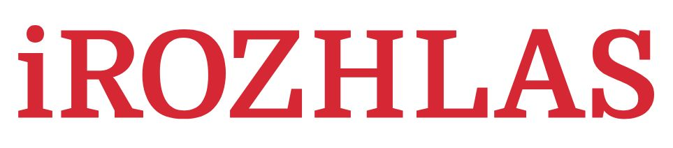

class: center, middle # Neznámí vlastníci zemědělských pozemků  ### Jan Cibulka, [jan.cibulka@rozhlas.cz](mailto:jan.cibulka@rozhlas.cz) prezentace: [https://datarozhlas.cz/novinarske-forum-18/](https://datarozhlas.cz/novinarske-forum-18/) --- ### Datová novinařina v ČRo [data na webu iROZHLAS.cz](https://www.irozhlas.cz/zpravy-tag/datova-zurnalistika)  --- ### Pozemky Agrofertu  [Agrofert neoprávněně hospodaří na 1700 hektarech...](https://www.irozhlas.cz/zpravy-domov/agrofert-dotace-holding-zemedelstvi-puda_1711280600_jra) --- ### Rada <law>Rada [...] upozorňuje provozovatele Český rozhlas [...] na porušení ustanovení § 31 odst. 3 zákona č. 231/2001 Sb., kterého se dopustil odvysíláním série zpravodajských příspěvků [...] které se zabývaly obhospodařováním pozemků s neznámým majitelem, kdy v těchto příspěvcích a pořadu došlo k nedostatečně objektivní prezentaci problematiky pobírání dotací na hospodaření na pozemcích bez právního důvodu.</law> [TZ RRTV 14. 8. 2018](https://www.rrtv.cz/cz/files/press/TZ_13_18.pdf) --- ### Co je Agrofert? [sbírka listin - Justice.cz](https://or.justice.cz/ias/ui/vypis-sl-firma?subjektId=525681)  --- ### Kde hospodaří?  [Veřejný registr půdy LPIS](http://eagri.cz/public/app/lpisext/lpis/verejny2/plpis/) --- ### Co je to za pozemky? [Katastr - RÚIAN](http://vdp.cuzk.cz/)  --- ### Technologické okénko - GIS  [What is GIS](https://www.esri.com/en-us/what-is-gis/overview) --- ### Pozemky s nedostatečně identifikovanými vlastníky  [ÚZSVM](https://www.uzsvm.cz/seznam-nedostatecne-identifikovanych-vlastniku-2138-0-85/) --- ### A interpretace?  [Hlídáme státu peníze: jak jsme hledali nejasnosti v dotacích pro Agrofert](https://www.irozhlas.cz/komentare/agrofert-dotace-zemedelska-puda-podvod_1711280700_cib) --- ## Dotazy? [iROZHLAS.cz](https://www.irozhlas.cz/zpravy-tag/datova-zurnalistika) [podcast Dataři](https://www.irozhlas.cz/datari) prezentace: [https://datarozhlas.cz/novinarske-forum-18/](https://datarozhlas.cz/novinarske-forum-18/) Případně pište na [jan.cibulka@rozhlas.cz](mailto:jan.cibulka@rozhlas.cz)